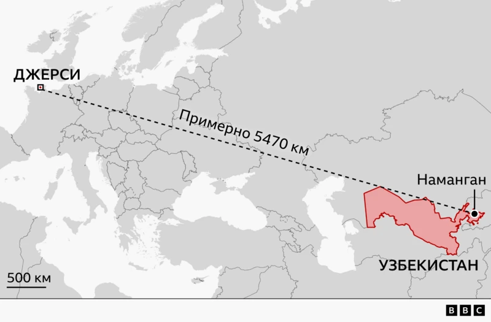
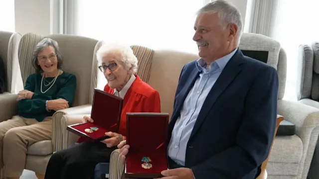

Gelöste Familienrätsel · 2026
Тайна советского солдата, бежавшего из лагеря на острове Джерси, и найденного 81 год спустя. Публикация BBC News Русская служба, 8 мая 2026.

Джерси - Наманган, около 5470 км. Карта: BBC News Russian.
В начале апреля представитель британских исследователей, разыскивающих бежавшего узника из сюжета ниже, обратилась к исследователю Никите Нэйтану Харченбергу с просьбой установить его личность через архивы Министерства обороны.
Работа заняла месяц: по её итогам была установлена предполагаемая личность узника и место его рождения. Для проверки гипотезы в город Наманган выехал человек по указанному адресу, и обнаружил по месту жительства потомков узника, подтвердивших, что их дед был в плену в годы войны.
Дальнейшие события: читайте в статье или смотрите в видео ниже. Коротко: власти Узбекистана посмертно наградили орденом Дружбы Джона и Филлис Ле Бретон, спасших узника, а награду за них получили их дети, заказчица исследования Дульси Ле Бретон и её брат Алан.
Летом 1941 года красноармеец Бокиджон Акрамов попал в плен на территории современной Украины. Нацисты вывезли его на остров Джерси в проливе Ла-Манш: строить укрепления вместе с тысячами других советских пленных, которых немцы держали в самых тяжёлых условиях.
В апреле 1943 года, изнурённый голодом, Бокиджон бежал и три месяца скрывался в полях, выучив по огрызку карандаша три тысячи английских слов. Фермерская семья Ле Бретон: Джон, Фелис и их четверо детей, включая семилетнюю Дульси, рискуя жизнью, укрыла его в сарае и почти два года звала его «Томом».
После освобождения острова в мае 1945 года Бокиджона репатриировали в СССР, и переписка с семьёй Ле Бретон оборвалась. Больше 80 лет Дульси не знала, что случилось с человеком, который читал ей сказки и играл с ней в скакалку.
Архивные документы Министерства обороны: наградные листы, донесения, списки личного состава позволили сузить поиск до одного человека, Бокиджона Акрамова, 1910 года рождения, из города Наманган.
Поездка по этому адресу подтвердила гипотезу: внуки Бокиджона Акрамова до сих пор живут в Намангане. Они рассказали, что дед никогда не говорил о войне и десятилетиями стеснялся показывать шрамы на ногах, след каменоломен Джерси.
Бокиджон Акрамов прожил долгую жизнь и умер в 1996 году в возрасте 86 лет. Дульси Ле Бретон, которой скоро исполнится 90, наконец узнала его судьбу, а власти Узбекистана посмертно наградили её родителей орденом Дружбы за спасение советского солдата.

Дульси и её брат Алан Ле Бретон с орденами Дружбы («Олий даражали Дўстлик» ордени), присуждёнными их родителям, Джону и Филлис Ле Бретон, посмертно.